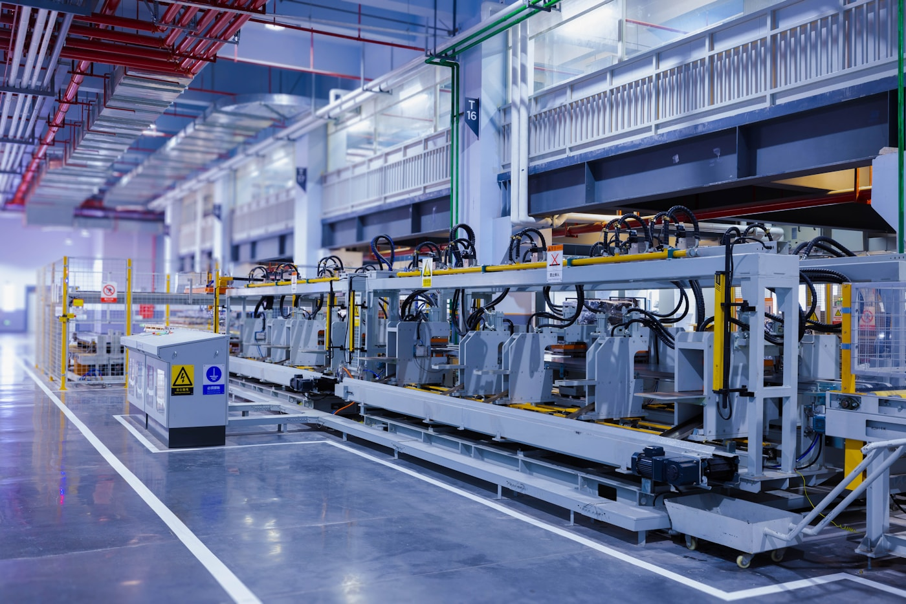
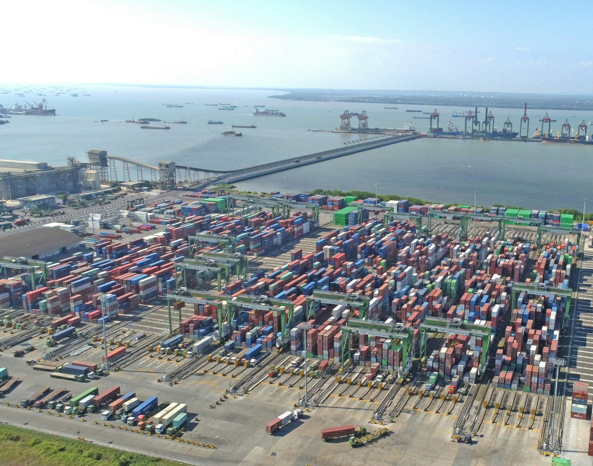

2025年9月、Anthropicのブログに1本の記事が静かに公開された。タイトルは「Economic Index」。グラフ数枚、数字ひとつ、本文およそ2,000字。
数日後、その数字がSNSで歪んだ形に伸びていた。「AIが仕事の77%を奪う」「雇用の77%が消える」。経営者の投稿が次々に拡散し、翌週には日本の経済紙にも同じ誤訳で載った。
Anthropic自身はどこにもそう書いていない。
Anthropicが2025年9月に公開した自動化率。
経済の話じゃない。自社APIのログの話。
Claudeに流れてきた法人利用のうち、77%が「人間の代わりに全部やってくれ」系の依頼。残り23%が「手伝ってくれ」系。Economic Indexに書かれていたのは、それだけ。
この数字が、歪んだまま広がった。「AIが仕事の77%を自動化する」と要約したメディアが続出し、経営層のSNSがそれを拡散した。書かれていない話を足して流通してしまった。
77%は、Claudeに仕事を送った法人顧客が、自分で選んで送った中身の比率。経済全体の話じゃないし、あなたの会社の話でもない。サンプルは偏っているし、Anthropic自身もそう明記した。ここを誤読すると、投資の方向が根っこから狂う。
77%は、Claudeに仕事を送った一部企業が選んで送った中身の比率。それ以上でも以下でもない。
仮にあの77%が本物だったとして、追いかける意味もない。AIの効き方は、入り方で桁が変わる。
MITのMert Demirerらが2026年2月に出したNBER論文「Chaining Tasks, Redefining Work」が、そこに線を引いた。議事録の要約、メールの下書き、コード補完。便利だし時短は出る。ただし工程の間に人が挟まり続けるので、組織は元の形のまま。生産性は足し算で、20%改善あたりで頭打ちになる。
営業→見積→契約書生成→請求→入金チェックを一気通貫でAIが処理し始めると、話が変わる。工程の間にいた担当者が要らなくなる。組織図の枠がひとつ消える。ここから生産性は掛け算で跳ねる。
同じ「30%にAIが入った」でも、前者と後者はまったく別物の話をしている。
Demirerの論文には、もうひとつ実証が入っている。AIが入った工程は、隣の工程もAIに置き換わる確率が高くなる。連鎖は自分で伸びる。一度繋がり始めると、止まりにくい。

繋がりができただけでは、まだ経済のゲームは変わらない。ゲームが変わるのは、R&Dや創薬や材料探索のように「会社の成長の足を握っている仕事」にAIが刺さったとき。
バックオフィスをいくら効率化しても、会社の成長速度の上限は動かない。そこはボトルネックじゃないから。R&Dに刺さると違う。研究者の数と時間が天井だった分野で、GPUと電力が新しい天井になる。投入計算量に比例して成果が出るようになり、同じ1ドルから出るリターンが、業界単位で桁で変わる。
「R&Dへの本格参入は10年先」と読んだ経営者は、2025年の資本の流れを見ていない。
TSMCの2025年の設備投資は380〜420億ドル。アリゾナへ追加で1000億ドル。ヒューマノイドのFigureはシリーズCで10億ドル調達、時価総額390億ドル、年1.2万台の量産ラインを着工した。イーロン・マスクのxAIはメンフィスで100万GPUのスパコンを4ヶ月で立ち上げた。
どれも「AGIが来るかもしれない」の保険じゃない。「来る前提で、先に物理を建てる」賭け。外したら焦げる金額は数兆円。途中で撤退する余地はない。
AGIが来るかを議論している間に、100万GPUはもう動いている。
この動きに合わせられる企業は限られる。IEAが2025年4月に出したレポートによれば、AI向けデータセンター用の送電網整備には4〜8年かかる。計画中プロジェクトの約20%が遅延リスクを抱える。
資本は12ヶ月で意思決定できる。送電網は10年かかる。このギャップが2027年頃までの勝負どころを決める。
電力、計算、R&D現場へのアクセス権（研究者、データ、規制との関係）。このうち2本を2027年までに押さえられなかった事業は、次のゲームの参加資格を落とす。
今後12ヶ月で追いかける3指標。どれかが動けば、時計が1段階進んだ合図。